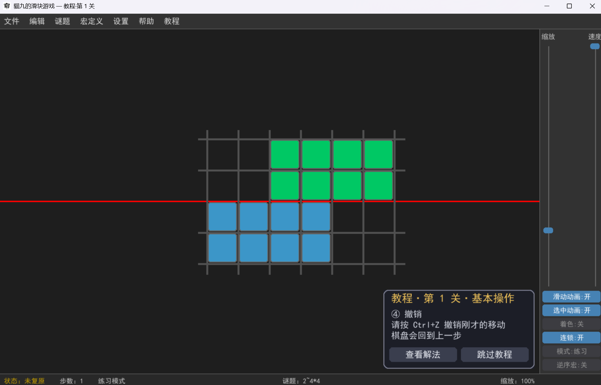
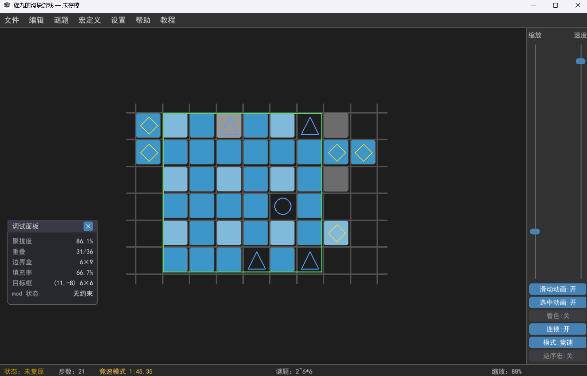
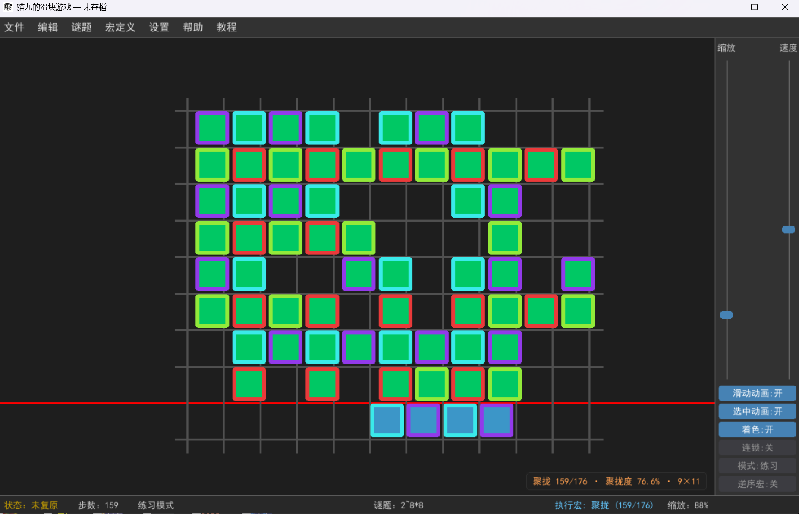
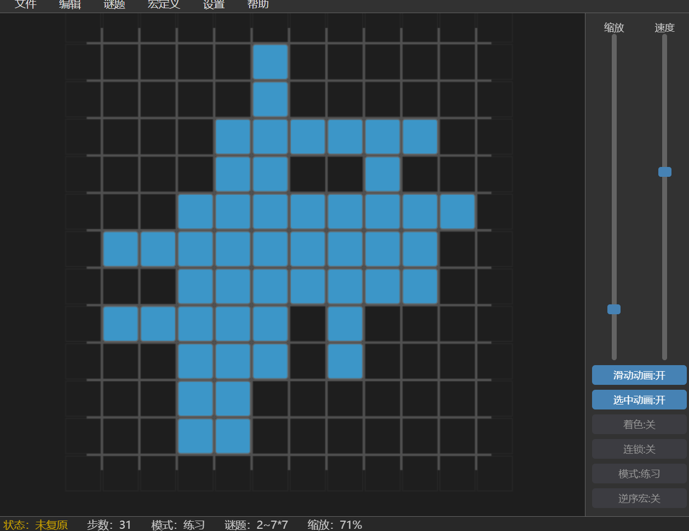

這是貓九製作的第二款原創規則遊戲。玩家（或 AI）透過「選縫隙 → 選滑塊組 → 滑動」把打亂的方塊還原成一個完整的實心長方形（允許整體平移或旋轉方向，不是回到初始版面）。
它的難度非常高，適合邏輯思維強的人挑戰。
支援平台：瀏覽器 / Windows 系統 / Python + pygame 環境。
貓九把遊戲的不同部分拆成多個連結，供不同需要的人下載。
版本說明：核心上就是兩種架構，Web 版和 Python 版。
| 版本 | 連結 | 需下載 | 依賴 | 介紹 |
|---|---|---|---|---|
| Web 版 | 點擊即玩 | 否 | 聯網・瀏覽器 | 功能較精簡 |
| Win 版 | 雲盤下載 | 是 | Windows 系統 | 完整版，由 Python 版編譯而來 |
| 離線 Web 版 | GitHub 下載 | 是 | 瀏覽器 | 功能較精簡 |
| Python 版 | GitHub 下載 | 是 | Python + pygame 環境 | 完整版 |
| 資料庫 | 雲盤下載 | 是 | Win 版 / Python 版遊戲 | 特殊功能（查表求解器資料） |
說明：資料庫指的是遊戲功能「查表求解器」執行時需要的資料；若缺失，該求解器無法使用。因為它不是核心功能，且與遊戲更新互不相干，所以專門提供連結。
2025 年，貓九發布了遊戲構思，用正方體磁鐵（巴克球）展示：[貓九]我用磁鐵設計了一種高難度謎題：貓九滑塊
2026 年，計畫錄製遊戲介紹並發布到 B 站。




遊戲提供了多種尺寸和難度的謎題，適合不斷挑戰自己。更多內容待更新。
目前 Web 版定位為「體驗版」：能玩、能還原、能計時、能存檔；部分進階功能不在 Web 版實現，完整功能請下載 Windows / Python 版本。
最後更新時間：2026.9.9
这是猫九制作的第二款原创规则游戏。玩家（或 AI）通过「选缝隙 → 选滑块组 → 滑动」把打乱的方块还原成一个完整的实心长方形（允许整体平移或旋转方向，不是回到初始版面）。
它的难度非常高，适合逻辑思维强的玩家挑战。
支持平台：浏览器 / Windows 系统 / Python + pygame 环境。
猫九把游戏的不同部分拆成多个链接，供不同需要的人下载。
版本说明：核心上就是两种架构，Web 版和 Python 版。
| 版本 | 链接 | 需下载 | 依赖 | 介绍 |
|---|---|---|---|---|
| Web 版 | 点击即玩 | 否 | 联网・浏览器 | 功能较精简 |
| Win 版 | 网盘下载 | 是 | Windows 系统 | 完整版，由 Python 版编译而来 |
| 离线 Web 版 | GitHub 下载 | 是 | 浏览器 | 功能较精简 |
| Python 版 | GitHub 下载 | 是 | Python + pygame 环境 | 完整版 |
| 数据库 | 网盘下载 | 是 | Win 版 / Python 版游戏 | 特殊功能（查表求解器资料） |
说明：数据库指的是游戏功能「查表求解器」运行时需要的数据；若缺失，该求解器无法使用。因为它不是核心功能，且与游戏更新互不相干，所以专门提供链接。
2025 年，猫九发布了游戏构思，用正方体磁铁（巴克球）展示：[猫九]我用磁铁设计了一种高难度谜题：猫九滑块
2026 年，计划录制游戏介绍并发布到 B 站。
游戏提供了多种尺寸和难度的谜题，适合不断挑战自己。更多内容待更新。
目前 Web 版定位为「体验版」：能玩、能还原、能计时、能存档；部分进阶功能不在 Web 版实现，完整功能请下载 Windows / Python 版本。
最后更新时间：2026.9.9